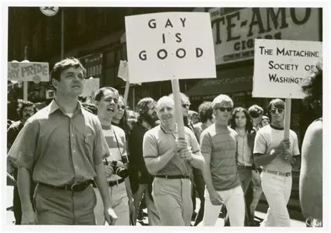
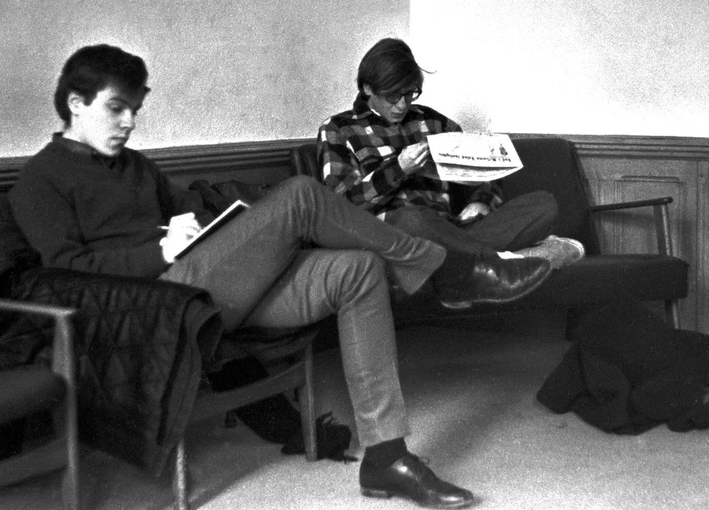
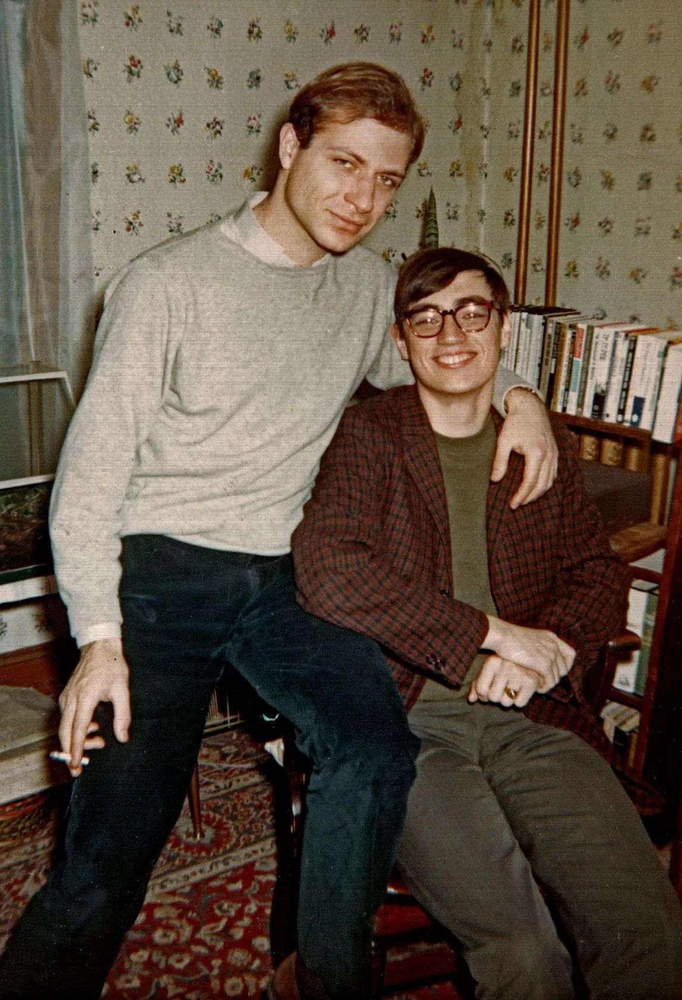
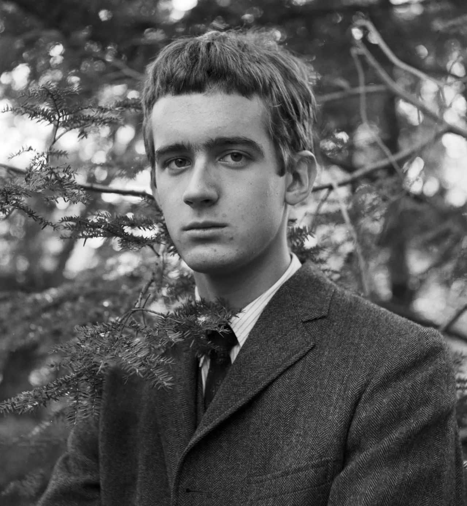
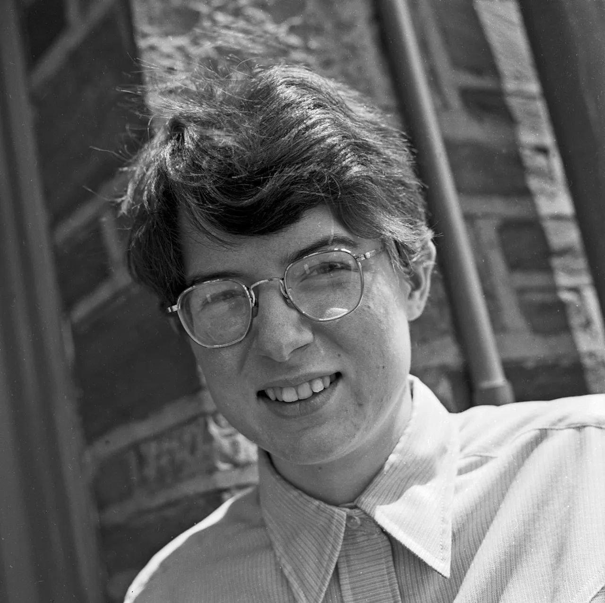
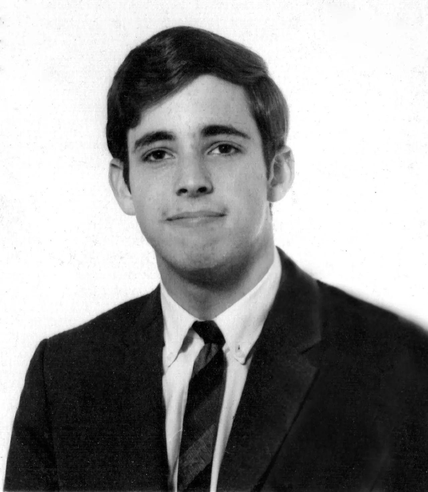
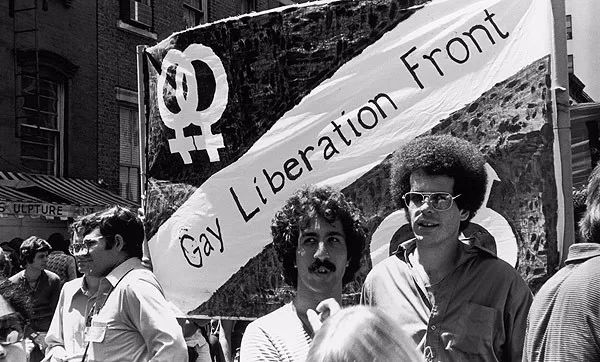
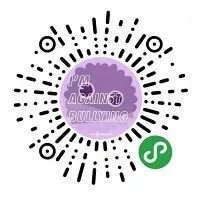

打破沉默：首个学生性少数组织的发展轨迹 | 同声传译

当我们试图勾勒出同性恋运动的发展轨迹时，石墙运动是其中最耀眼的标志性事件之一。然而，在对抗主流性别规范和强制异性恋制度的这场拉锯战中，许多自发的公民行动早在石墙运动之前就已经如星星之火般在全美各地酝酿。当变装皇后和跨性别者站在对抗国家暴力的前线而被铭记时，也有无数被公共记忆所遗忘的“小人物”们在努力改变着这片充满歧视和偏见的土壤。
本文把历史的聚光灯重新照射在了大学校园里的这群勇者身上，通过书写哥伦比亚大学和康奈尔大学里的同性恋运动组织的发展史，让我们得以了解到，在看似平静的象牙塔里也有着尖锐的同性恋歧视和四处弥漫的恐同症，而我们的主人公则运用着富有创造力的组织战略的和灵活巧妙的行动方式，建立起一个个同志社群，并为同性恋群体的可见度和权利保障打开了一扇扇天窗。此外，本文还把校园同性恋运动放置在美国六七十年代风起云涌的社运大背景下，讲述着同运作为平权运动和公民行动的一部分，是如何与反越战运动和黑人民权运动达成联盟，彼此共享行动资源、学习斗争策略，在不断紧缩的权利空间下奏响了联合抗争的新篇章——这对于今天原子化日益深重的我们来说，更是一个宝贵的启示。

打破沉默：首个学生性少数组织的发展轨迹
Brett Beemyn
俄亥俄州立大学
这是一个为人熟知的故事：1969年纽约石墙运动爆发后，一群自我认同为女同性恋、男同性恋、双性恋和友同直人的行动主义者在美国创立了一个性少数权利激进组织，在随后的同性恋解放运动中，他们发挥了重要作用。然而，这群人并非纽约市居民，而是纽约州伊萨卡地区康奈尔大学的学生；这场运动的主体亦非格林威治村石墙酒吧里的非裔和拉丁裔变装皇后，而是占领了康奈尔校园Willard Straight教学楼的一群非裔美国大学生团体。这个名为同性恋学生联盟（Student Homophile League, SHL）的组织甚至并非如我们所想的那样，是诞生于石墙运动所带来的社会震荡中，而是早在1968年就正式成立，成为继哥伦比亚大学SHL之后第二个全美高校同性恋权利组织——而康奈尔大学SHL正是其首个分会。

虽然石墙运动推动性少数平权运动进入一个新阶段，但客观来说，在此之前，哥伦比亚大学、康奈尔大学和一系列其他高校所开展的激进运动也为石墙暴动后性少数运动的蓬勃发展打下了坚实的基础。学生组织不仅带领着大家高呼“身为同志”的骄傲宣言，还毫无畏惧地分享个人生活经历（这被康奈尔SHL称为“zaps”），与反战组织等其他同期风起云涌的社运团体建立联盟，推动同性恋解放议题进入公众视野，这些使得同性恋议题在1970年前后跳脱出局限在同性恋组织的相对孤立环境，一度成为许多激进学生运动团体共同的政治议程和行动目标，这些组织的努力也使得同志解放运动在校园里获得了更多人的支持。
尽管如此，研究同志运动的历史学家们还是大大低估了学生组织在同性恋解放事业中发挥的作用。他们要么认为同性恋解放运动肇始于石墙运动之后，要么就只关注主流同性恋团体如迈特什协会（the Mattachine Society）和比利提斯的女儿（the Daughters of Bilitis）（然而这当中的许多组织其实是反对石墙运动所代表的暴力性质的）。为了理清同性恋解放运动的发展史，我将追溯哥伦比亚大学和康奈尔大学同性恋小组的发展轨迹，其中，校内的反战团体和黑人权利团体鼓励着同性恋组织变得日益活跃和激进。而康奈尔大学SHL从主要关注公民自由转变为大力倡导社会解放和政治解放，也反映着并促进了同志运动的激进化发展。
同性恋学生联盟(SHL)的诞生
尽管在20世纪五六十年代同性恋运动兴起之前，许多校内同性恋群体就已经在进行半隐秘的聚会，并开始构建非正式社交网络了，但迈特什协会的行动精神还是为学生同性恋组织的萌芽提供了灵感。1965年秋，公开了双性恋身份的Stephen Donaldson成为了哥伦比亚大学的一名新生，他不仅积极参加迈特什协会纽约分会的活动，而且在因公开出柜而被母亲赶出家门后，与迈特什协会的时任主席住在了一起。在校第一年里，他不仅没有遇到任何“同类”，还因为他的室友不希望和一个双性恋住在一起，而被校方强制赶出了宿舍。受此经历影响，当他在第二年遇见其他同志学生时，他提议应该成立一个像迈特什协会一样的学生组织，并设想它成为“”建立同志学生斗争联盟的第一分会”。
创建组织的过程困难重重。Donaldson和另一位学生愿意在校方面前代表SHL（尽管也要使用化名，这也是当时同性恋运动中组织方出于安全考虑的惯常做法），但其他学生只愿意在完全匿名的前提下加入组织。当时，哥伦比亚校方不承认无法提供成员名单的组织，也拒绝以保护同性恋学生权利为名义而开方便之门。于是，在1966-1967学年，小组只能在地下运营，这使得他们很难吸纳到新成员，因为他们既得不到学校的资助，也无法在校园里举行公开活动。直到Donaldson猛然想到，他并不一定要把全体会员的完整名单交上去，而可以仅仅上交那些愿意透露名字的成员的名单，这个僵局才得以打破。他将校内最活跃的学生领袖招募进来，把他们的名字写在成员名单上，这一方面满足了校方的要求，一方面也保证了不愿透露名字的参与者的匿名性。终于在1967年4月19日，校方许可成立了这一组织——这也是美国首个学生同志权利组织。
讽刺的是，校方的批准却让这个新生的组织差点覆灭。5月3日，纽约时报在首页刊登了SHL组织被批准成立的消息，“所引发的全国性的争议，几乎断送了这个组织的命运”。学校信箱被情绪激愤的信件所淹没，校园报纸《哥伦比亚每日观察报》（the Columbia Daily Spectator）的版面也充斥着对校方这一决定的指责。学院院长认为SHL的存在“完全没必要”，咨询服务中心主任则担心这会引发学生的“行为失范”。尽管小组的指导老师、同时也是学校牧师的大力支持让校方最终没有撤销许可成立的决定，但“由于可能违反纽约州的鸡奸法，小组被勒令停止进行社会活动”。
尽管媒体的报道大多是负面评价，但其带来的曝光度却意外地吸引了更多人的加入。当SHL获批成立时，成员大约只有12个；而到了下一个学期，活跃成员已突破20个。成员中有相当数量的异性恋，但几乎没有女性。其实，要不是Donaldson坚持对面试者进行面试，以“检验他们是否经过慎重思考并热衷于同性恋事务”从而确保现有成员的身份安全的话，成员人数可能会更多。

学生同性恋联盟(SHL)在康奈尔大学的创立和发展
媒体报道不仅为哥伦比亚大学SHL带来社会关注，还使得其他学校的学生也纷纷联系Donaldson，商讨在自己学校里成立SHL分会的相关事宜。康奈尔大学的学生报纸《康奈尔太阳日报》（the Cornell Daily Sun）在1967年春学期期末刊登了两篇文章，报道了哥伦比亚大学SHL组织为获得校方承认所付出的努力，并在秋学期追加了一期深度报道，介绍了SHL的发展壮大和在其他学校进行拓展的计划，虽然当时康奈尔并不在计划的学校之中。Donaldson说：“只有康奈尔大学学生主动联系我，我才能考虑在康奈尔建立SHL组织，然而目前我并没有收到来自康奈尔的任何消息”。但《康奈尔太阳日报》当时的结论是，校方并不会反对成立这样的组织，负责审核批准社团成立的校方领导也曾表示，他们“在过去也批准成立过类似这样存在争议的社团”。
我们不清楚《康奈尔太阳日报》是否有意鼓励康奈尔学生在本校成立SHL组织，但最终康奈尔大学确实有了自己的SHL组织。尽管康奈尔大学的同志学生并没有像其他高校的学生那样热衷于组织政治活动，但他们确实具备组织成立SHL组织的社交网络基础。之前，康奈尔大学就有男同性恋会在特定的洗手间附近徘徊（人文学院大楼的洗手间是其中最受欢迎的一个地点，它上面甚至还贴有一个标志，写着“这个房间经常有人光顾”），在几家以异性恋为主要服务人群的酒吧里，也有人在小心翼翼地辨认着同类们。1960年之前，同志学生就在校园里偷偷摸摸地进行着社交活动，其中最著名的地点是学生会的音乐房——讽刺的是，音乐房所在的这幢大楼被命名为Willard Straight，或者说“直男楼”——和安娜贝尔泰勒楼（Anabel Taylor Hall）的咖啡屋，平时神父Daniel Berrigan在打理这个地方，他是康奈尔宗教工作服务部门的副主任，也是一个知名的和平主义者和平权活动家。在午餐时间，同志学生和友同学生也会在学生会咖啡吧碰面，而正是在这里，Jearld Moldenhauer提出了在康奈尔大学建立同志权利组织的想法。

· 音乐房内部
当时Moldenhauer是一个大四学生，他曾看到《康奈尔太阳日报》上提到目前尚未有学生愿意组建SHL小组，因此他决定主动发起成立小组的倡议。Moldenhauer的倡议受到了不冷不热的回应，Robert Roth是咖啡吧聚会的常客，他说Moldenhauer的倡议在这一小群同性恋里引发了不少人的反对，因为很多人对自己的性倾向讳莫如深，非常担心成立这样的组织会让自己的身份曝光。尽管如此，当1968年3月Moldenhauer致信Donaldson，向他讨要SHL章程时，校内还是有了足够多的支持声音。“我相信，即使这个组织不得不在各方的压力下艰难运营，它本身存在的重要性也是不容置疑的，”Moldenhauer告诉Donaldson，因为“这样的组织光是其存在本身，就能促进大家对同性恋群体持有更公正、更健康的态度”。
一个月后，Moldenhauer告诉Donaldson他在推动SHL的成立上取得了重大进展。当Moldenhauer意识到很多大学教员，甚至是他所知道或怀疑是同性恋的那些，也不想与SHL牵扯上关系时，他找到了Berrigan，并请求他担任指导老师，毕竟他激进的政治态度是众所皆知的。尽管Berrigan当时正忙于反越战的抗议活动，但他还是同意了。Moldenhauer也招募到了三个学生，“全都是异性恋”，他们非常愿意担任SHL的管理层，并在申请社团成立的手续中将自己的名字写进名单里。但考虑到其中几个同性恋成员身份安全性的问题，Moldenhauer还是希望自己能说服社团管委会（Schedualing, Coordination and Activities Review Board, SCARB）在必须提交名单这一规定上有所通融。“在那个年代，有人愿意站出来并公开谈论同性恋是一件很了不起的事情，”Moldenhauer回忆道：“而我们就是其中之一”。尽管Moldenhauer在写信给Donaldson时署的是真名，但在组织SHL活动的过程中，他还是像哥伦比亚大学的前辈们一样用了化名。“我不在意别人会因为我的同性恋身份而如何看待我，但我依然需要顾虑我的家人，毕竟姓Moldenhauer的人不多。”
大多数康奈尔大学的同性恋学生并不愿意公开自己的身份，哪怕是在化名的保护下，这使得Moldenhauer在成员招募上举步维艰。“我几乎不认识什么同性恋学生，而我认识的那些对我所做的事情感到提心吊胆，并敬而远之。”在学生会咖啡吧一起用午餐的小团体里面，也只有一个人在一听到要成立组织时，就立马表示想要参与，这迫使Moldenhauer不得不在他的社交圈外寻找同性恋者。他用素白色信封把介绍SHL的传单包好，在校园周边的酒吧中递给那些他猜测是同性恋的人。当这个方法行不通时，他甚至开始“壮着胆直接走到那些外表上看起来gay里gay气的陌生人面前，公开自己的同性恋身份，并邀请他们加入SHL”。尽管有些人的回应不那么友善，但Moldenhauer还是收到了一些很积极的反馈，这让他坚信随后就会有更多人加入进来，或者至少是提供资金上的支持。然而，当SHL正式申请注册时，他无奈地告诉Donaldson“SHL在学生中的反响并没有那么好……目前我们只有四个异性恋成员和两个同性恋成员”。

· Jearld Moldenhauer和他的室友
尽管招募到的人员不足，SHL的注册之路却意外地顺利。由于Donaldson自己在哥伦比亚大学也面临着成员招募难的问题，因此他只要求有五个缴纳会费的正式成员、一个推选出来的代表、一份目的陈述和一份基本章程就可以加盟SHL全国联盟。1968年5月14日，康奈尔大学SHL得到了Donaldson的成立批准，成为了“全国第二个批准成立的SHL组织”。五天前，社团管委会SCARB已经同意SHL在无需上交成员名单的情况下正式成立，Moldenhauer希望这能鼓励更多学生加入进来。
由于学期即将结束，会员大会要等下学期才能开始，“但1968学年秋季新学期的纳新也没有那么顺利”。招募讯息主要通过口口相传，而且遵循哥伦比亚大学分会的做法，新成员也必须通过Moldenhauer或Berrigan的面试才能正式加入。由于人员不足，有人建议Moldenhauer让会员大会向未被筛选过的公众开放，于是，11月21日组织举办了第一次向全校所有人公开推介会。
“正如预期中的那样，这次活动把Moldenhauer私人社交圈之外的新人带了进来”，Pauline Layton是其中之一，Ta一直觉得自己是“困在女性身体里的男性灵魂”，想看看“这个学校里有没有人也像我一样这么想”。但由于“1968年到1970年期间并没有什么关于跨性别和异装者的讨论”，这使得Layton心灰意冷。虽然Layton一直被当做要么是一个直女，要么是一个深柜拉拉，但Ta还是继续参加SHL的活动，在1970年毕业之前，Ta还成为了组织的副负责人。
另外一个在1968年加入组织的是贾妮思·凯利（Janis Kelly），她是当时屈指可数的几个女性成员之一。尽管SHL的章程中明确写出组织面向“所有性别的同性恋、异性恋和双性恋”，但组织内并没有几个拉拉。大多数成员是男同性恋或友同直男，而且主要是Moldenhauer拉进来的熟人。事实上，Moldenhauer以为组织里所有的女性成员都是友同直人，当他在欢迎致辞中透露出这个意思时，凯利立刻纠正了他，同时向在场所有人宣布“我是个拉拉”，全场一片哑然。“SHL并没有提供什么认识拉拉的机会”，Layton回忆道，“SHL在这一点上确实做得不尽如人意”。
尽管Layton和另外一些Ta以为是直女的人都和女性谈过恋爱，但组织中相当一部分成员确实是异性恋。上文也提到，组织初创时，成员中的异性恋人数就比同性恋多，而且在创立后的一年内，组织也一直强调这并不是一个只有男同性恋的小组。这是为了吸引更多学生加入，也是保护同性恋成员安全的技巧。由于同性恋校园小组是一个全新的未被开拓的领域，SHL的领导者们担心学校管理人员会对一个全都是男同性恋的组织持有偏见（尤其是考虑到Donaldson在哥伦比亚大学面临的艰难处境，以及康奈尔大学对学生运动一向的强硬态度）。“我们甚至都不知道哪天会被学校赶出去”，凯利坦承。
组织里的异性恋成员也为那些想要加入、却又担心自己的身份会被泄露的同性恋者们提供了掩护。“早先时候，每周学生组织都会在司代德楼开例会，而SHL的成员通常会被其他组织的成员看作是异性恋，”Layton回忆道，“有可能这些人里确实有异性恋，但一般人也不会深究，这给人们留下了日后转变思维方式的空间”。
通过召开例会、举行公开宣传的聚会、鼓励异性恋者的参与和不强制要求成员给自己的性取向定型等举措，SHL在学期结束前招募到了一大批新人。1968年12月，《太阳日报》将组织的迅猛发展描述为“同性恋的抱团取暖”，Moldenhauer带有纠正意味地回应说，SHL有三十名成员，其中“同性恋和异性恋基本各占一半”。组织成立一年后，SHL每周的例会都有二十五人左右参加，要么是讨论日常事务的短会，要么是围绕着某个成员所提出的议题进行更加深入的讨论。

· Theodore Gulick. Theo出席了SHL的第一次会议，并且当时已出柜。
内部纠纷
学生组织中有个常见的现象：组织规模越大，有关其理念、策略、活动的争执越激烈，SHL也不例外。根据Donaldson在分会成立前提出的建议，康奈尔SHL分会强调，他们是一个公民自由权利和普及教育组织，而不是社会运动团体，以便避开“个人交友平台”或“鼓吹同性性行为”的指责。“没有人能预知未来，”Kelly回忆道，“所以我们当时口头约定，把它打造成一个争取公民权利/公民自由的学生组织。”最初的宣传单将SHL描述成一个“致力于向康奈尔社区普及同性恋及同性恋者的相关知识，实现同性恋者的完全平等，帮助同性恋者打造健康的自我形象”的学生团体。
然而，在1969年春学期期间，SHL中的异性恋及深柜群体与公开出柜的同志分裂成两个阵营。前者希望SHL可以继续关注公民自由话题，而后者希望SHL可以成为更加纯粹的同性恋组织，着眼于同性恋文化建设，而不是想方设法获得主流认同。当时，学校当局不会制裁公开出柜的同性恋学生，这种惩罚措施只会增强他们的性别认同。“那时活跃的同志学生大多也是积极的反越战分子，”所以被赋予了更多政治色彩的同志学生不再掩藏自己的同性恋身份，积极反抗社会主流意识形态。他们与日俱增的影响力，在1969年SHL组织宗旨的修订上也有所反映。如今，SHL宣称，他们积极寻求“为同性恋人群形成健康的自我形象提供服务，无论这一形象是符合社会规范的，还是离经叛道的”。
虽然修正后的宗旨仍然延续了之前“SHL不是一个社会组织”的论述，但同志学生越来越敢于倡导社会活动。最初的组织形式主要是非正式的。比如，时任SHL秘书的Bob Roth会定期在校园旁的公寓中举办派对，邀请“已知的或疑似是性少数的人们”参加。虽然这些派对不是SHL的官方活动，但客观上使外部人员与SHL的内部成员熟悉起来，结交更多的同类。“SHL使同志扩大了他们的同志交友圈，不再局限于恋人和炮友，”Layton说道，“具有相当规模的同志社区初具雏形。”因为女同性恋和女双性恋很难在校园中进行社交，这类活动对女学生来说显得尤为重要。
除了私人聚会，校园外很少有友同场合，无论是对男同的还是女同的。SHL创建之时，附近唯一家可以公开袒露性取向的商业场所是Hathaway。Hathaway是一家距离伊塞卡地区20公里远的饭店，每周六营业结束后会变成一家地下gay吧。据Kelly介绍，同志需要在晚上11点前进入饭店，伪装成“直人”，等到饭店11点关门，所有异性恋离开，店主才允许同性恋开始社交活动，直到第二天清晨。
虽然公开出柜的康奈尔学生对跑到城外并伪装成异性恋进行社交有些厌烦，但他们在伊萨卡城内的社交机会实在太过有限。Kelly口中的“一小撮灵魂人物”的小团体经常光顾校园附近的大学城（collegetown）里的酒吧，但是在这些酒吧贸然接近疑似同性恋的人，往往有很大的风险。Alt Heidelberg是最受这个小团体欢迎的一家酒吧，形形色色的人来来往往，整体气氛相对包容开放。然而，1968年四月的一场大火将其夷为平地，“酒吧小团体”不得不重新跑到皇家棕榈酒吧（Royal Palm），而来自客人、经理越来越多的骚扰和驱赶使他们被迫再次迁移。
同性恋群体开始以政治团体的形式联合起来，对自己的性取向也更加认同；然而与此同时，同志公开社交的机会却越来越少。许多成员深知这个矛盾，埋怨着无处可去。但SHL的领导层没有一味的抱怨社会资源的缺乏——他们已经出柜并且积极寻求发声，所以以此自勉，努力打造公共的同性恋活动中心。通过这种方式，SHL鼓励更多的学生勇敢地出柜，并将性别认同赋予政治色彩。作为行动的第一步，他们精心打造了一个“地下gay吧”。Kelly回忆道：
我们坐在一起抱怨为什么我们没有gay吧，这时有人注意到之前的Eddygate饭店（位于大学城）将会作为Morrie's酒吧重新开张。于是Bob（Roth）不经意间说到，“如果它是gay吧就完美了，可惜不是。”……突然，Bob灵光一闪，“为什么它不能是gay吧？什么是gay吧？gay吧是充满同性恋的酒吧。这不难。难道同性恋不能去这家酒吧吗？既然如此，我们为什么不把它打造成一个gay吧？大概因为以前没人做过这档子事，所以酒吧才会顺其自然地变成直人的酒吧。”他接着说，“这样，打电话告诉所有人，告诉他们‘有家gay吧要开业了。’”……于是我们散会回家，打了整整一个下午的电话，以完美无缺的真诚口吻告诉所有人“嘿，听说有家gay吧要开门了，你想去吗？我们约好了周六晚上11点去。”不出意料，当那家酒吧开业时，挤满了一群群的男女同性恋。那感觉太棒了。
直到第二年，同性恋依然是消费人群的中坚力量。每周都有几个夜晚被称为“同志之夜”，晚上11点以后，同性恋通常占酒吧顾客人数的一半以上。

· Pauline Layton，SHL早期成员
SHL的领导层也尝试通过发起校园内的活动，来为同性恋群体创造社交机会，但是，这一提议遭到了许多成员的坚决反对。即使哥伦比亚分会近期放开了组织社会活动的禁令，康奈尔SHL分会中未出柜的同性恋成员担忧，如果这个组织曝光率过高，并且专门为同性恋学生举办活动的话，可能会引起当地势力的强烈反对，而且“被出柜”的风险也会增加。大多异性恋成员希望SHL可以延续它的科普教育宗旨，因为他们加入的初衷是实现同性恋和双性恋人群更高的社会接受度。所以，为同性恋者提供更多的社交机会对他们来说并不重要。经过多次讨论，在一些偏保守的成员退出之后，双方终于达成了共识：SHL每月举办一次舞会，但是地点设在Anabel Taylor教学楼的隐秘之处，最大限度地避免引起直人的注意。然而，活动的隐秘性令很多同志对此活动一无所知，因此，最开始的舞会参与人数寥寥，两方都扫兴而归。
SHL的领导人最终明白，如果想让SHL组织和其活动获得成功，必须直面恐同现象，而不是选择逃避。他们采取的策略是邀请家喻户晓的同志领袖来到校园，进行同性恋平权的公开演讲。这不仅可以提高同性恋人群的可见度，同时也可以符合了一些成员对于发挥组织教育职能的最初期待和主张。“这点燃了我们的希望，”Layton说到，“这些活动不仅让成员更加团结，而且可以向大众普及同性恋的相关内容。”第一位演讲者是Frank Kameny，迈特什协会（华盛顿特区）的联合创始人之一，同时也是同性恋病理模型的主要批评者。Kameny的演讲定于1969年4月24日在SHL联盟的主会客厅中进行。
但是，SHL并没有像预想中迎来“此季高潮”。4月19日，约100名康奈尔大学的非裔美国学生占领了Willard Straight楼，向校方示威施压，抗议学校对黑人学生漠不关心的态度，比如学校司法体系对黑人学生的偏待，以及黑人学生选课申请处理的延缓。一群白人学生试图夺回大楼控制权，在此之后，抗议者害怕遭受进一步袭击，于是偷偷携带了枪支，然后学生民主协会（SDS）在大楼四周建立了缓冲区。经过34分钟的紧张斡旋，校方和学生终于达成和解，学校行政部门答应不对学生的占领行为提起诉讼，宣布之前对三名非裔学生的判决无效，并允诺重新检验学校的司法系统。第二天，校方驳回了行政部门的建议，但随着六千人乃至上万人——其中包括SHL的大部分领导层——占领了学校主体育场，校方在4月23日撤回了决定。Roth称其为“学生与学校互相增进理解的重要一步”。
鉴于黑人和白人学生之间的冲突不断升级，SHL被迫取消了第二天Kameny的演讲。据Layton称，“在这个敏感时期，就算是异性恋在晚上在学校走动都害怕被揍，举办Kameny的演讲实在是太危险了。”然而，在SHL的领导层看来，占领Willard Straight楼事件及其后续发展，可以为接下来的公众活动预热，这恰恰符合了他们的预期。随后，康奈尔分会发行了第一期《SHL时讯》，其中，编辑Roth将校方对学生示威活动的回应列为头条，“这次学生示威活动释放了一个信号：少数群体在深受压迫和歧视的处境下仍可以争得一席之地，”Kelly重申道，“非裔美国社群的发展和斗争深深鼓舞了我们。”

· Robert Roth
康奈尔大学的学生起义激励了SHL的领导层，同时，夏天的石墙运动使他们醒悟，一味地迎合深柜群体的要求是徒劳的。“我们决定终止对话，”1969年选任的SHL联盟领袖Kelly回想道，“我们必须学会权衡取舍，因为很难兼顾每个人的想法，一味做那些不痛不痒的事情只会更加一事无成。”所以，内部分裂一方面源于是否出柜的分歧，一方面也是基于意识形态的分化。Kelly解释道：“那段时间SHL的一群人，打着“直人的旗号”，暗地里却和同性发生性关系。宛如那个‘穿灰色法兰绒的男人’，花言巧语，自欺欺人。我们中的一些人开始思索，问题是否更宏观……是整个机制出现了问题。”1969-1970年间，Kelly、Roth以及其他投身于反越战运动SHL的成员开始与学生SDS结为同盟，这成为内部分裂的导火索。虽然他们知道，与SDS联盟会无可避免地失去部分人心——这部分人虽支持SHL的改革，但认为SDS太过激进。无论是哥伦比亚SHL分会还是纽约大学分会，都不曾在1968年秋天与如此激进的组织密切联络。据康奈尔分会描述，“SDS会‘以你之名，行己之事’，到头来，背黑锅的还是SHL的同性恋”，这件事情的潜在风险太大，可能导致人心涣散。然而康奈尔分会没有让自己陷入这种境地。有些SHL成员正式加入了SDS，有些参与了SDS举办的活动。David Burak，康奈尔SDS时任主席，“强烈拥护”此联盟，即使有些新左派的异性恋是恐同人士。
根据康奈尔此团体撰写的如何建立学生同性恋群体协会的手册，SHL与SDS联盟的原因之一是“在大多数校园中，SDS作为一个人员众多、组织有序的主体，上至占领教学楼，下至发传单，无一不能。倘若想要发动罢工，SDS也可助你一臂之力”。对于康奈尔SHL分会的领导人来说，与SDS合作至关重要，因为康奈尔分会是SHL全国第三大分会。通过合作，SHL可以获取当地左派印刷公司的支持，以低廉的价格印刷自己的时讯简报和传单。廉价的印刷如同一场“及时雨”，Kelly说，因为《康奈尔太阳日报》在组织初创的前两年的发行率覆盖率极低。然而1970年秋的入学季，联盟向新生发行了成千上万份时讯简报——SHL于是一举成名——这是领导层在苦恼失去保守派成员时完全没有料到的。
知名度提升的另一里程碑出现在SHL活动盛行zap之风时，“公开出柜的同志人群进行快闪式学生互动，努力提高同性恋问题的公共意识。”第一批zaps安排在课堂上、兄弟会和姐妹会上、以及宿舍大厅中——“所有能想到的地方”，Kelly回想到。然而，“最终我们被赶了出去”，所以只能“硬着头皮多试几次”。Kelly说，“在那艰苦的六个月间（1970年），Bob (Roth)和我每周要碰两三次头。”他们的辛苦没有白费。Zap成为联盟“最有效的组织策略”，不仅让学生们了解了LGBT性少数人群的生活，而且趁机吸纳了许多新成员。
从同性恋权利到同性恋解放
除了与SDS结盟、组织大规模的宣传活动、举办Zap之外，还有三个主要活动形式标志着SHL成功从1970年代低谷转型成为更具对抗力的激进组织：邀请被禁的激进派领导参与联盟启动会议，组织公众抗议游行，更名为“同性恋解放阵线”。“为了寻求一个声势浩大的开幕式”，能够在新学期伊始赚足眼球，同时表达对新左派（New Left）的声援，进而“推动与左派恐同人士的联盟”，SHL邀请David Burak在联盟启动会议上发表演讲。David被禁止出入康奈尔校园，因为他在先前六月的毕业典礼上抢话筒。发表这一活动的同时，联盟同时声明了他们的定位：“组织这次会议时，我们充分理解并坚决反对校方对Burak先生自由出入校园的禁令。如果康奈尔大学追求的是开放式校园，就应该开放给所有人。只开放给Dow Chemical，而禁止Burak进来的，根本不是开放式校园。为了推动活动的进行，Roth给校方寄了一封信，公开表明了违反禁令的意图。
正如所料，此次活动吸引了大批同志学生和SDS成员的参加，并且扭转了Kelly口中“沙文主义左派”对同志群体的刻板印象，让他们意识到同志人群也是左派运动的一分子，也不失激进与理性。“那段时间意义重大，因为当时的人们仍然认为同性恋是软弱的懦夫”，Kelly说道，“但实际上，我们才是那些有胆量公开邀请David Burak来演讲并广而告之的人”。Burak在鼓励左派异性恋、支持同性恋解放上尽心尽责。当SHL成员遭到质疑时，他回击道：“如果SDS的成员真的想改变世界……他们最好都来参与下周的（SHL主办的）舞会。于是SDS真的来了。”Kelly回想，“SHL的舞会让他们自惭形秽。于是之后，这场舞蹈成为校园多年来最火爆的舞会。”从此，他们可以在学校最显眼的地方——学生会的主厅练舞。
另一个反映SHL影响力日益提高的事件，是联盟领导下的Morrie's酒吧抗议运动，以及后续的抵制活动。虽然Morrie's酒吧自1969年春天开张以来吸引了大批同志顾客，然而酒吧本身并不知情，所以很多同性恋不得不藏着掖着，不敢明着向同性暗送秋波，或相拥起舞。店主Morris Angell对同性恋顾客很包容，但并不想自己的酒吧被冠名为“gay吧”——同性恋的专属聚集地。Angell的担忧一定程度上和他的婚姻有关——他和镇里的民主党主席结婚了。SHL和其他同性恋社群意识到了Angell 的矛盾心理，他们“特意没有在传单上留下Morrie's酒吧的名字。”
然而，其他人并没有这份好意。1970年10月，《太阳日报》一位不怀好心的恐同作家将Morrie's酒吧描述成一个观赏“基佬美学”的好去处，于是Morrie's酒吧突然拒绝接待同性恋顾客。报刊发行的那一晚，Roth和其他几位朋友被Angell赶出酒吧，并且被告知“再也不要来了”，因为Angell不想让“他们这类人”出现在酒吧。第二天，Angell重申了他的态度，于是SHL，刚刚更名为同性恋解放阵线（Gay Liberation Front，GLF）组织了一场酒吧静坐的占领活动。“那时，人们总是动不动地占领某某建筑；到处都在罢工；我们总是去反战游行示威，然后挨催泪弹，”Kelly说，“所以我们想，这他妈都是什么，让我们来做个了断吧。”

抗议行动和名称更改标志着SHL激进运动的日益兴盛，反映出同性恋解放运动与其他激进的校园运动的联系日益密切。这个时候，绝大多数保守派成员都离开了SHL，留下的人也承认，“homophile”的表述已经过时，需要一个新的“更加激进的”代称。虽然第一个同性恋解放阵线成立于一年前的纽约城，分会也开遍全国各城及各大学，SHL更名和此协会并没有多大关系。SHL领导层仿照康奈尔“黑人解放阵线”联盟（占领Straight楼的非裔美国社群），更改了自己的名称。“黑人学生组织对我们影响很大，”Kelly回忆道，虽然很少有非裔美国学生参与SHL/GLF的活动。更名过后，SHL/GLF希望“与校园其他运动组织建立更加亲密的关系，尤其是女性自由联盟（Women Lib）。”
GLF没有很多黑人成员，女性更是少的可怜，但是更加激进的GLF成功将许多激进的活动家拉到同性恋阵营，最为突出的当属Morrie's酒吧抗议活动。短短不到一天时间，来自SDS、新成立的康奈尔女性自由联盟（Women’s Liberation）的数百人，聚集在酒吧门口示威，大约50名GLF的成员和支持者静坐在酒吧，不消费，不离场。Angell报了警，但警察到场后告诉他，“你不能辱骂他们，你只能拒绝服务他们。”面临声势浩大的一群人的不断声讨，法律的无能为力，Angell只能保证不再歧视和差别对待同性恋人群，抗议行动才得以平息。
或许这是首次同性恋学生静坐示威，Morrie's酒吧的示威活动吸引了全国同性恋新闻媒体的广泛关注，并在Donn Teal的社会运动编年史中作为早期同性恋解放运动的重要事件中被引用。但是这次抗议仅仅是康奈尔同志活动者与酒吧抗争的第一步。Angell没有信守承诺，他仍然歧视同性恋顾客。他开始拒绝向他认为是同性恋的顾客提供服务，理由是他们喝醉了，就算他们什么都没喝也是如此。他还抬高了价格，大方地承认提价就是为了赶走同性恋顾客。作为回应，GLF向当地的酒精饮料委员会递交了一份正式的投诉书，要求审查并吊销Morrie's酒吧的酒精饮料经营资格，同时呼吁康奈尔社区抵制Morrie's酒吧“直到酒吧真正落实并永久保障同性恋群体在酒吧里的公正待遇。”
这项抵制活动受到了很大支持。为了弥补同志顾客的流失所带来的损失，Angell重新调回了酒水的正常价格，后来又大幅降价，又开始提供现场乐队演出，来吸引异性恋顾客。而且GLF和SDS的匿名成员跑到酒吧发传单的行为，导致客流量的大幅下降。那些恐同学生，虽然不支持所谓的抵制活动，但是由于媒体将Morrie's酒吧和同性恋人群混为一谈的报道，使他们自觉远离Morrie's酒吧。由于酒吧招揽不到客人，一直处于亏损状态，Angell终于同意与GLF协商，最终在抵制活动发生的三个月后，以Angell书面形式的道歉及保证收场。Angell对同性恋群体在酒吧遭受到的所有不公正待遇和歧视道歉，并且“个人承诺酒吧会随时为所有顾客带来愉悦而高效的服务。”
SHL/GLF的影响
酒吧静坐和抵制活动的成功使GLF成为“校园知名组织力量”，与此同时，康奈尔SDS，也像其他地区的分会一样，产生了内部意识形态的分化，并以性别为基准出现内部分裂。从某种意义上来讲，这两项事态发展并非没有关系。对大部分因为厌倦男性领导者的沙文主义而离开康奈尔SDS的女性来说，她们在参与同性恋政治和社会运动时，逐渐意识到自己对其他女性的吸引力，所以转而成为GLF成员。同时，厌女症也同时影响着GLF分会，如纽约城分会。但是康奈尔GLF很少有性别对立冲突，可能是早期发展的两年间规模比较小，成员之间的亲密关系超越了性别界限。“我们需要团结一心共度难关，”Kelly说，“我们都是‘讨人嫌团体’的人……总而言之，我们张开双臂，热烈欢迎所有挺身而出、公开出柜的人，无论男女。”Jearld Moldenhauer1969年毕业之后，SHL迎来了一位女性接班人，第二年，Kelly毫无异议地当选新任主席。女性领导鼓舞了其他女性加入SHL/GLF，有效的避免了基于性别的分裂——而纽约城的GLF在1971年因内部性别分化最终导致解体。
尽管纽约城的GLF最终瓦解了，但康奈尔GLF日益兴盛。截止到1971年，GLF一共拥有超过175家全国高校的学生同性恋组织加盟，包括哥伦比亚大学分会和康奈尔大学分会在内的七家纽约州高校分会。当然并不是所有的学生团体都致力于同性恋的解放事业，但大多数是的，于是，学生开始不断扩大同性恋运动，使其更引人注目，更有反抗精神。此外，通过将性别认同政治化以及将同性恋与其他政治运动建立联系，这些学生团体赢得了许多非同性恋的活动家和活动组织对同性恋群体权利的支持，建立起不断发展的联盟关系，并且一直延续到今天。
学生运动的另一个深远影响是使同性恋学生的开放程度有了显著提高。1950-1960年间，大多数的同性恋群体，如早期的哥伦比亚大学和康奈尔大学学生团体，往往是地下组织，成员常常担心自己同性恋的身份被曝光。即使是在华盛顿特区以及上世纪60年代中后期在费城举办的同性恋游行示威活动，人们都相当保守，游行参与者着正装出席，只有指定的几个人用真名，在媒体前进行演讲。因此，当康奈尔SHL的主席放弃使用假名、举办会议和舞会、公开讲述自己身为同性恋的骄傲时，无疑是里程碑式的进步。在形形色色的观众面前谈论自己的生活，破除人们对女同、男同、双性恋的刻板印象，康奈尔SHL同其他后续的团体一起，同其他高校的学生团体一起，帮助更多的同性恋接受自己，勇敢出柜。毫不夸张地说，这些努力在很大程度上影响了随后几年的社会运动的走向和发展。

译者注
1.石墙运动（Stonewall Riot）：石墙酒馆是美国纽约格林威治村的一个同性恋聚集地，在20世纪60年代一直饱受警方的骚扰甚至勒索。1969年6月27日，警方又一次突然搜捕纽石墙酒馆，引发了众人的愤怒情绪。人们开始聚集起来抗议警方的行动，并向警方抛掷石块和酒瓶。事件平息后，美国乃至世界范围内的同性恋平权运动开始轰轰烈烈地发展起来。
2.迈特什协会（the Mattachine Society）：建立于1950年，是美国最早的同性恋权利组织之一。
3.比利提斯的女儿（the Daughters of Bilitis）：建立于1955年，是美国最早的女同性恋组织之一。
4.Zap：zap是一种盛行于石墙运动后的激进对抗行动，通过刻意贬损政治人物、快闪式的出柜宣言等方式提高媒体对LGBT议题的关注度，从而达到提高性少数人群可见度、引发公民广泛讨论的效果。
5.Jearld Frederick Moldenhauer的个人网站：
http://www.jearldmoldenhauer.com
塞尔玛 哀瑞斯 | 翻译
塞尔玛 哀瑞斯 谜蔻斯 | 校对
谜蔻斯 | 编辑

欢迎扫描二维码进行打赏